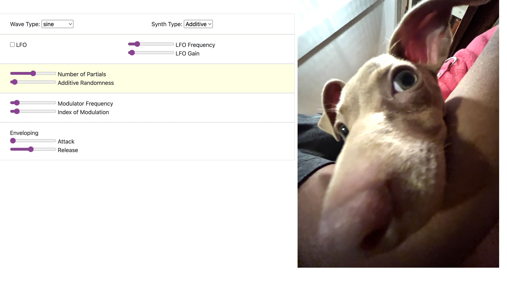

My projects!


A musical cube that plays different notes based on its orientation. Made during my summer REU at USC when I worked in the HaRVI lab with Professor Heather Culbertson as my advisor.
See the project poster here
I continued this project with an independent study and wrote this paper.
This project was featured in the USC Viterbi news



A keyboard piano using a synth that adds effects to a wonderful picture of my dog, Jumble, when you change the qualities of the synth. Made as a project for my Computational Sound class at Barnard.
Explore it here